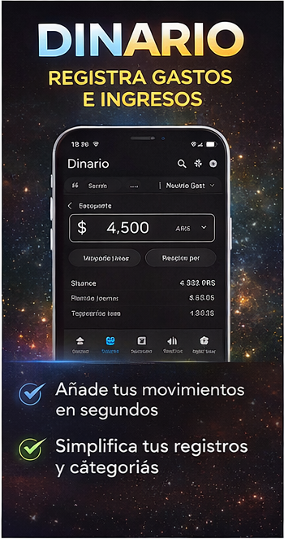
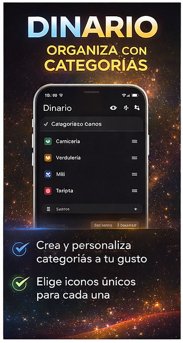

Dos apps, cero fricción
Tu dinero en orden y tus notas protegidas, desde hoy.
Pasá de la intención a la acción con herramientas simples, rápidas y privadas. Menos vueltas, más control en tu día a día.
Instalación en minutos. Sin registro obligatorio.
- Sin cuentas obligatorias
- Listas para usar offline
- Privacidad desde el día uno


Todo lo que necesitás para avanzar, sin ruido.
Mientras otras apps te distraen con pasos de más, Dinario y Cypher Notes te ayudan a resolver rápido: registrar, organizar y proteger.
Empezás al instante
Registrá un gasto o una nota en pocos toques, sin procesos largos ni curva de aprendizaje.
Privacidad real
Tu información se queda con vos. Menos exposición y más tranquilidad en cada uso.
Continuidad total
Sin internet, seguís igual. Tu organización no depende de la señal ni de terceros.
Dinario
Controlá tu dinero sin planillas ni estrés.
Dinario te muestra lo esencial para que tomes decisiones claras. Registrás, entendés y mejorás tus hábitos sin perder tiempo.
- Registrá movimientos al instante y mantené el ritmo.
- Vé tu balance mensual en una sola mirada.
- Detectá oportunidades de ahorro con estadísticas claras.
- Personalizá categorías para reflejar tu realidad.
- Gestioná todo offline, con privacidad local.


Cypher Notes
Tus ideas valen: mantenelas seguras de verdad.
Cypher Notes combina simplicidad y seguridad para que escribas con confianza, desde recordatorios diarios hasta información sensible.
- Protegé tus notas con encriptación y biometría.
- Bloqueá notas puntuales cuando necesites máxima reserva.
- Recuperá notas eliminadas desde la papelera integrada.
- Escribí y consultá offline, sin depender de la nube.
- Mantené foco con una interfaz rápida y directa.


La diferencia está en cómo te simplifican la vida
Estas apps están pensadas para acompañarte todos los días: menos fricción, más control y una experiencia en la que podés confiar.
Sin cuentas obligatorias
Instalás, abrís y empezás. Sin registros largos ni pasos que te frenen.
Sin dependencia de la nube
Ambas apps funcionan localmente para darte continuidad y menos riesgo.
Datos bajo tu control
Tu información permanece en tu dispositivo, donde vos decidís qué hacer con ella.
Descargalas ahora y ganá claridad desde el primer día.
Elegí la que más necesitás hoy o combiná ambas para ordenar tus finanzas y proteger tu información personal.
Dinario
Finanzas personales claras y rápidas.
Descargar en Google PlayCypher Notes
Notas privadas protegidas por diseño.
Descargar en Google Play